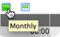

My Calendar
Contents
1 Overview
Any ServiceNow user with the resource_user role can open My Calendar to view, add, and modify their planned work, actual work, operational work, administrative tasks, and personal activities. After a user adds an event to the calendar, the time blocks for that event appear as red, for busy, on the resource console and the resource availability dashboard. Resource managers view user calendars to determine who has open time to complete tasks, and can add tasks to any resource's personal calendar.
The system creates a record in the Resource Event [resource_event] table for each item that a user adds to their calendar. Resource events are chunks of busy time for the user. Users and resource managers can sometimes modify these records. For more information, see Modifying Resource Events.
The calendar uses time zones. Time is displayed to users in their local time zone according to user preferences. For more information, see Using Time Zones and Using Time Zones in Resource Plans.
| |
Note: Although a user can add tasks, such as incidents, to their calendar, the user is not added to the task's Assigned to field. |
2 Event Color Coding
There are five types of events. Each event type is visually represented on the calendar with a specific color:
- Time Off: Light pink
- Appointment: Orange
- Meeting: Cyan
- Phone Call: Green
- Task: Cornflower blue
{kind=link}
Administrators can change the colors of events. For more information, see Changing Resource Event Colors.
3 Adding Events to Your Calendar
Users can add any kind of event to their calendar, including personal events and work-related events. Events cannot overlap. Only one event can exist in a calendar for any specific block of time. To create an event that repeats daily, weekly, or monthly, see Creating Repeatable Events.
- Navigate to Resource Management > My Calendar.
- The calendar appears in the week view by default. The user work schedule appears in white and the off-duty schedule in gray.
- Change the view as necessary:
- Click the icon in the upper-left  to change between monthly and weekly.
- Click the forward or back arrows at the upper-right to change the day, week, or month. Click the calendar icon
 to select a specific date.
to select a specific date.
- Click an empty white cell on the calendar.
- The Add Event form appears.
- Fill in the fields, as appropriate (see table).
- Click Submit.
{kind=link}
| Field | Description |
|---|---|
| Name | Enter a descriptive name for the event. |
| Type | Choose from the following: |
| When | Choose the start and end date and time, or select the All day option. Do not use this field to set repeatable events. For example, if you have a three-hour task you want to start on a Monday and end on the following Friday, do not use the When field. Instead, set a weekly repeatable event for Monday and Friday. |
| Repeats | Select the frequency that the activity repeats, or select Does not repeat. |
| Repeat every | Enter a number that represents the frequency. This field appears only if you selected Daily, Monthly, or Yearly. |
| Repeat on: | Select the days of the week to repeat the activity. This field appears only if you selected Weekly. |
| Repeat until: | Select an end date. This field appears only if you selected Daily, Monthly, or Yearly. |
| Task | Click the reference lookup icon and select the task that needs to be done. This field appears only if you selected Task as the type of activity. Note: This does not add you to the Assigned to field on the task form. |
4 Creating Repeatable Events
Events can be set to repeat on a regular schedule, such as every day, week, or month. If you try to create a repeatable event and the specified time slot is not available for any one of the occurrences, the event cannot be created.
To create an event that repeats every week:
- Navigate to Resource Management > My Calendar.
- Click an empty white cell on the calendar.
- Create an event with the following options:
- Name: Repeating Task
- Repeats: Daily
- Repeat Until: Last day of the current year
- Task: Any task
- Click Submit.
- If an event already exists for any of the times specified for the repeating event, the following error messages appear:
{kind=link}
{kind=link}
5 Adding Events to Another User's Calendar
Using the Resource Console, resource managers can add events to user calendars.
To add an event to a user in a group you manage:
- Navigate to Resource Management > Resource Console > Resource Console.
- At the bottom of the console, click a plan Number.
- At the top of the console, click a Resource Name.
- The calendar for that resource opens in a new window or tab.
- Click an empty white cell on the calendar.
- The Add Event form appears.
- Fill in the fields, as appropriate. For detailed field descriptions, see Adding Events to Your Calendar.
To add an event to a user that is not a member of a group you manage:
- Navigate to Resource Management > Resource Console > Resource Console.
- At the top, expand the Resource Filter.
- Use the filter to specify a particular user. For example, [User][is][Jane Jones].
- Click Run
- In Resource Name, click the user name.
- The calendar for that resource opens in a new window or tab.
- Click an empty white cell on the calendar.
- The Add Event form appears.
- Fill in the fields, as appropriate. For detailed field descriptions, see Adding Events to Your Calendar.
6 Deleting Events
You can delete events you created at any time. You cannot delete any events added to your calendar by a resource manager.
- Navigate to Resource Management > My Calendar.
- Find the event to delete.
- Use the icons above the calendar to locate the appropriate day, week, or month.
- Double-click the event.
- Click Delete.
- Click OK.